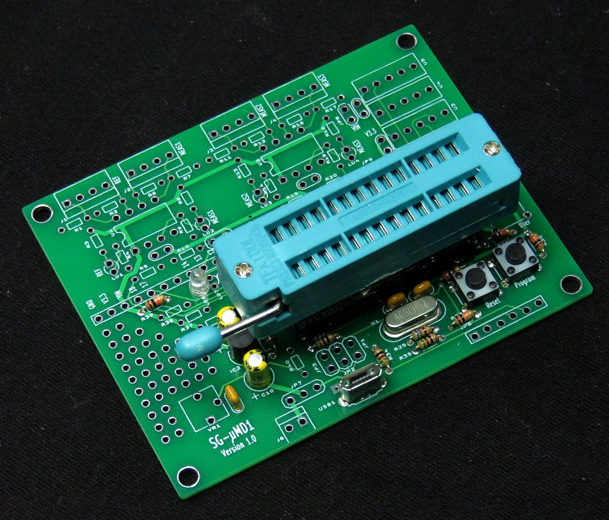
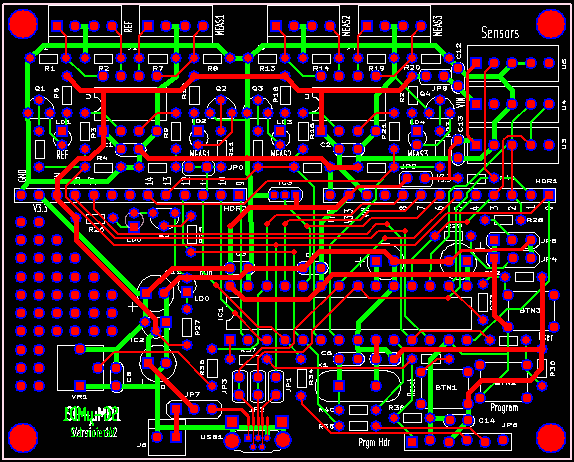
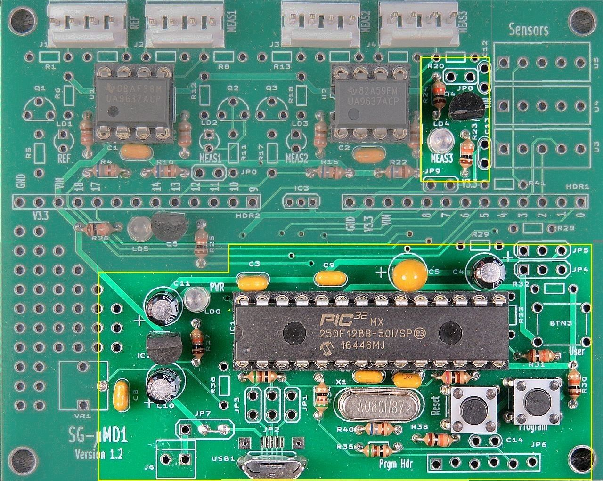

For contact info, please see the Sci.Electronics.Repair FAQ Email Links Page.
Copyright © 1994-2016
Reproduction of this document in whole or in part is permitted if both of the
following conditions are satisfied:
1. This notice is included in its entirety at the beginning.

The 28 pin SDIP ZIFF socket is plugged into a leaf-spring socket which is
plugged into a machine-pin socket. The stack is glued together on the
edges so that it easily plugs into the socket on the SG-µMD1 PCB.
Installing a right-angle header for JP6 would be beneficial as a straight
header blocks the Reset and Program buttons. Of course, the PIC32 can be
plugged directly into the on-board socket.
All components are through-hole and except as noted in the detailed
assembly procedure, should seat flush on the
PCB. They shouldn't be suspended in mid-air swinging in the breeze. :)
Most components are identified on the silk-screen and with only a few
exceptions, the label won't be obscured when the part is installed.
SG-µMD1 V1.0 Single Axis
PCB shows the PCB populated with the parts for a single axis
system without sensors. Only the parts below the headers are required
for MPLAB and USB download support.
A low power soldering iron with narrow tip and thin (e.g., #22 AWG) rosin-core
solder will be required. DO NOT even think about attempting this without
suitable soldering equipment. It's well worth the investment. A Weller
soldering gun or propane torch will not work. :) Rosin core solder is also
essential. And while
I'm quite confident that you never make mistakes, a means of component removal
such as a de-soldering pump (e.g., SoldaPullt™) will be highly desirable.
Screwing up component removal can easily ruin the PCB and is not covered
under the unlimited limited warranty. :-)
Proper soldering technique will be such that the exposed solder on each
pad should be shiny with a concave profile. It should not be a blob and
just needs to fill the hole. Solder is not glue.
Some excess solder doesn't hurt anything
but looks unprofessional. A 10X magnifier may come in handy for
inspection. Residual rosin can be cleaned off with
isopropyl alcohol or an environmentally-friendly electronic solvent.
However, leaving the rosin alone is also acceptable (if ugly).
Total assembly time should be well under two hours for someone proficient
in fine soldering. Cutting component leads to 1/4 to 3/8 inch before
installation will simplify soldering as the long leads won't be poking
you in the face. :( :) Then trim flush after soldering.
The USB driver is NOT required for MPLAB, only a USB port or charger
to provide 5 VDC power. CAUTION: If using a charger, confirm that its
output is close to 5 VDC. This should always be true for those from
name brands like Apple. But others that are non-genuine or counterfit
may be all over the map.
Instructions for using MPLAB to download the bootloader are in the
µMD1 manual (where you came from).
All Rights Reserved
2. There is no charge except to cover the costs of copying.
DISCLAIMER
µMD1 is intended for use in hobbyist, experimental, research, and other
applications where a bug in the hardware, firmware, or software, will not
have a significant impact on the future of the Universe or anything else.
While every effort has been made to avoid this possibility, µMD1 is an
on-going development effort. We will not be responsible for any consequences
of such bugs including but not limited to damage to the wafer FAB you
picked up on eBay for $1.98 + shipping, financial loss from the use of
37 spools of ABS due to the office 3-D printer fabricating a part 25.4x
too large in all dimensions, or bruising to your pet's ego from any number
of causes directly or indirectly related to µMD1. ;-)
Acknowledgment
Thanks to Jan Beck for selecting the chipKIT DP32 and writing and testing
initial versions of the firmware and GUI. And for getting me interested
in actually getting involved in this project. If anyone had told me
six months ago that I'd be writing code in C, MIPS assembly language,
and Visual Basic - and enjoying it (sort of) - I would have suggested
they were certifiably nuts. ;-) Jan maintains the master GUI source code
as well as slightly different versions of the firmware and a
development blog on the overall project.
And a version of the firmware providing basic readout of displacement
on any Bluetooth wireless device with a terminal APP, or with a bit
more polished presentation (though not the complete GUI) on Android devices,
may be found on Jan's Web site. See that and more under "References".
Introduction
This document provides assembly instructions for the minimal configuration
to enable the SG-µMD1 V1.2 PCB to support the downloading of the
bootloader and other firmware directly via MPLAB, or via USB.
SG-µMD1 V1.0 PCB MPLAB Version with ZIFF Socket. V1.2 is Nearly Identical
Schematic for the SG-µMD1 Version 1.2
The schematic for the SG-µMD1 Version 1.2 PCB may be found at
SG-µMD1 Version 1.2 Schematic.
This includes everything on the board. For MPLAB, all that's needed
are the PIC32-specific parts and parts associated with JP6.
Printing out the schematic and having it available for reference while assembling the PCB may be helpful.


This shows a PCB populated for a 3-axis system with the required MPLAB parts highlighted. In essense, most parts below mid-board are required to run the PIC32 and for it to communcate with the MPLAB programmer and USB. The only parts above mid-board that are required are LD4 and it's assoicated resistors and transistor. Also a header for JP6, and C14 should be installed (not shown).
Print out this document so each step can be checked off ( ) as it is completed.
The through-hole USB connector is installed at a right angle to the PCB. If you would prefer one that faces sideways and are comfortable soldering an SMD connector with legs that are only 1.3 mm apart and barely accessible even with a narrow-tip soldering iron, they are readily available from electronics distributors or eBay and should be compatible with the PCB layout pattern. One may even be included in this kit but its mounting tabs may need to bent down to fit the PCB holes.
Note that once other parts are installed, it's virtually impossible to correct any soldering errors on the SMD connector.
Or if you can locate a through-hole connector that installs flat on the PCB, contact me via the email links at the top of this page. :)
Note: The 33 pF and 0.1 µF capacitors may appear identical. Inspect their marking to identify them.
Note: The 33 pF and 0.1 µF capacitors may appear identical. Inspect their marking to identify them.
If nothing happens even after multiple attempts, the PIC32 isn't running for any number of reasons, or the bootloader is not present (as would be the case if the PIC32 were ordered from an electronics distributor). In that case go to the next step.
Reference Type Part/Value Function
-------------------------------------------------------------------------------
BTN1 Pushbutton SPST NO Reset
BTN2 Pushbutton SPST NO Program
C3 Capacitor 0.1 µF IC1 3.3 V bypass
C4 Capacitor 4.7 µF IC1 VBUS bypass
C5 Capacitor 10-22 µF Tant. IC1 VCAP bypass
C6 Capacitor 33 pF IC1 crystal bypass
C7 Capacitor 33 pF IC1 crystal bypass
C8 Capacitor 0.1 µF 3.3 V bypass
C9 Capacitor 0.1 µF 3.3 V bypass
C10 Capacitor 4.7 µF VIN bypass
C11 Capacitor 4.7 µF 3.3 V bypass
C14 Capacitor 0.1 µF 3.3 V bypass
IC1 IC PIC32MX250F150B-50I/S PIC32 28 pin SDIP
IC2 IC MCP1703T 3.3 V regulator TO92
LD0 LED 3 mm LED Power LED
LD4 LED 3 mm HB LED RB3 LED (chipKit LED1)
Q4 Transistor 2N3904 LED driver
PCB1 PCB SG-µMD1-PCB Blank SG-µMD1 PCB V1.2
R22 Resistor 51 ohm, 1/8 W PIC32 reset
R23 Resistor 10K ohm, 1/8 W PIC32 reset
R24 Resistor 200 ohm, 1/8 W PIC32 reset
R25 Resistor 680 ohm, 1/8 W PIC32 crystal
R26 Resistor 10K ohm, 1/8 W Power LED current limiting
R30 Resistor 10K ohm, 1/8 W Program button bias network
R31 Resistor 10K ohm, 1/8 W Program button bias network
R34 Resistor 51 ohm, 1/8 W P32_PGD series resistor
R35 Resistor 51 ohm, 1/8 W P32_PGC series resistor
R39 Resistor 10K ohm, 1/8 W RB3 (LED1) current limiting
SKT1 Socket 28 pin, 300 mil Socket for PIC32
SKT4 Socket 6 pin, SIP Socket strip for JP6
USB1 Connector USB Micro B female connector
X1 Crystal 8.0000 MHz PIC32 master clock
Notes:
-- end V1.01 --